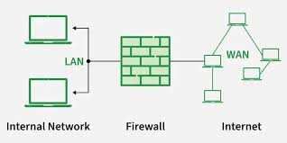

Firewall
Funguje ako bariéra medzi dôveryhodnou internou sieťou a nedôveryhodnou externou sieťou, ako je napríklad internet, s cieľom zabrániť neoprávnenému prístupu a chrániť pred kybernetickými hrozbami.
Kontrola údajov prebieha na základe aplikovania pravidiel, ktoré určujú podmienky a akcie. Podmienky sa stanovujú pre údaje, ktoré možno získať z dátového toku (napr. zdrojová, cieľová adresu, zdrojový alebo cieľový port a rôzne iné). Úlohou firewallu je vyhodnotiť podmienky a ak je podmienka splnená, vykonať akciu (povoliť alebo zamietnuť datový tok).
Hardvérové firewally: Sú to vyhradené fyzické zariadenia, ktoré chránia celé siete filtrovaním prevádzky na perimetri siete.
Softvérové firewally: Sú to programy nainštalované na jednotlivých zariadeniach alebo serveroch, ktoré monitorujú a kontrolujú prevádzku na základe pravidiel nastavených používateľom alebo správcom.
